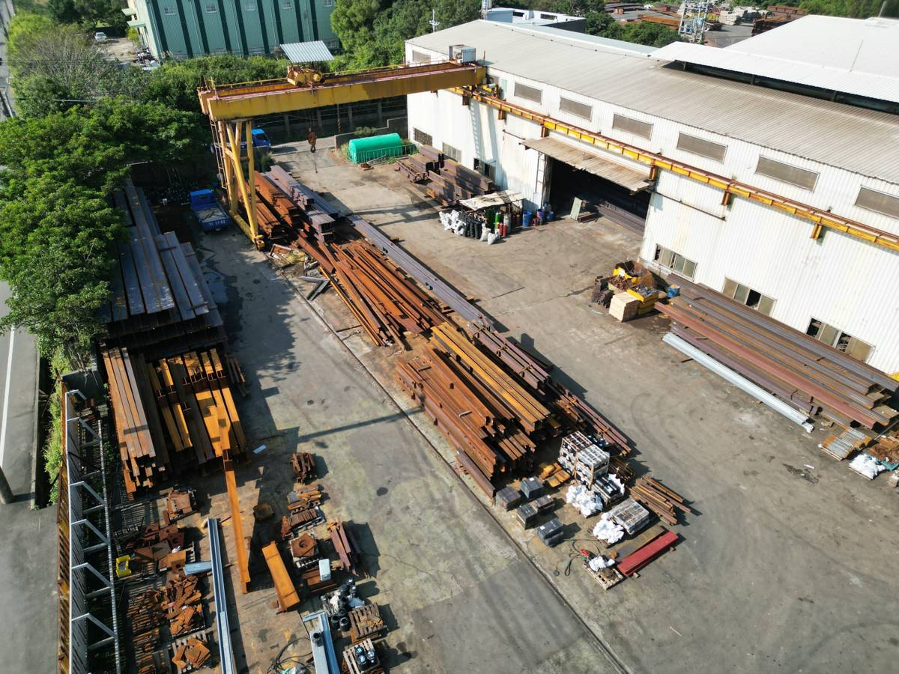
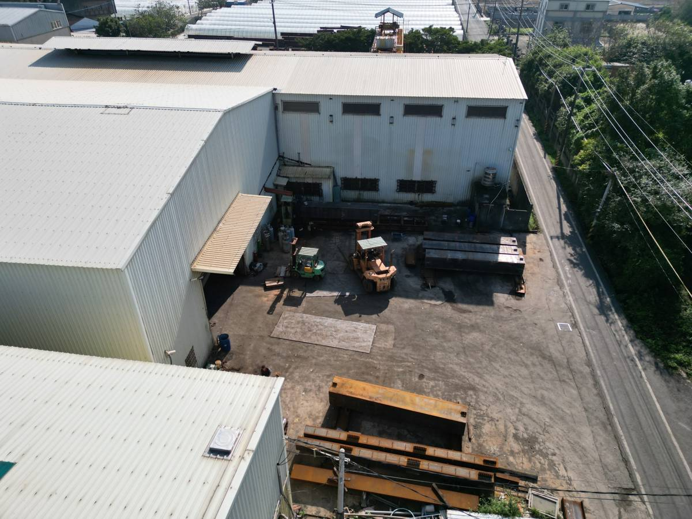
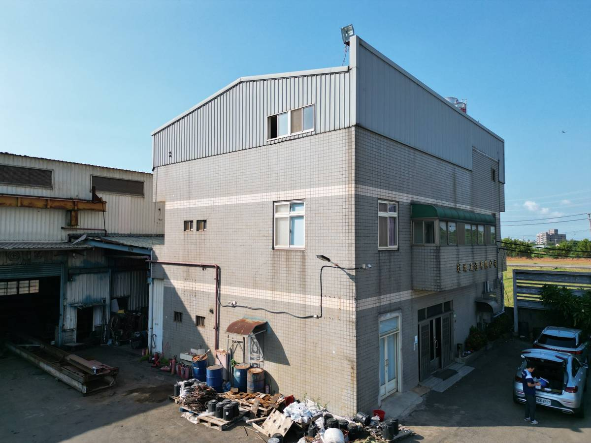

ABOUT
關於冠澔
專業、效率，您最值得信賴的鋼結構工程專家
冠澔工程有限公司深耕桃園，是一家具專業素養的鋼結構工程企業。我們專注於鋼結構工程、工程承包與施工圖繪製，並擁有 BOX 加工及 H 型鋼雷射加工的現代化生產實力。
服務對象涵蓋各大營造廠與建設公司，工程實績遍及台北危老重建、商辦大樓、現代化廠房，以及大型物流倉儲。
鋼結構工程的難處，往往不在單一環節，而在環節之間的銜接。因此我們導入系統化的構件資料管理，在工程前期以 3D 建模進行精準估算，並憑藉扎實的圖說檢討能力，提前找出施工衝突，把問題解決在圖面階段。
搭配機動性高的加工製程與專業的吊裝規劃，冠澔工程以「高效率、成本合理」為核心，協助客戶解決各類鋼結構難題，打造安全穩固的建築基石。
圖說檢討前置Tekla 建模與 RFI 釋疑，提前排除施工衝突。
系統化構件管理構件資料集中管理，加工與吊裝順序有所依據。
加工到吊裝一貫BOX 加工、H 型鋼雷射加工，搭配吊裝規劃。
廠區
桃園市觀音區


